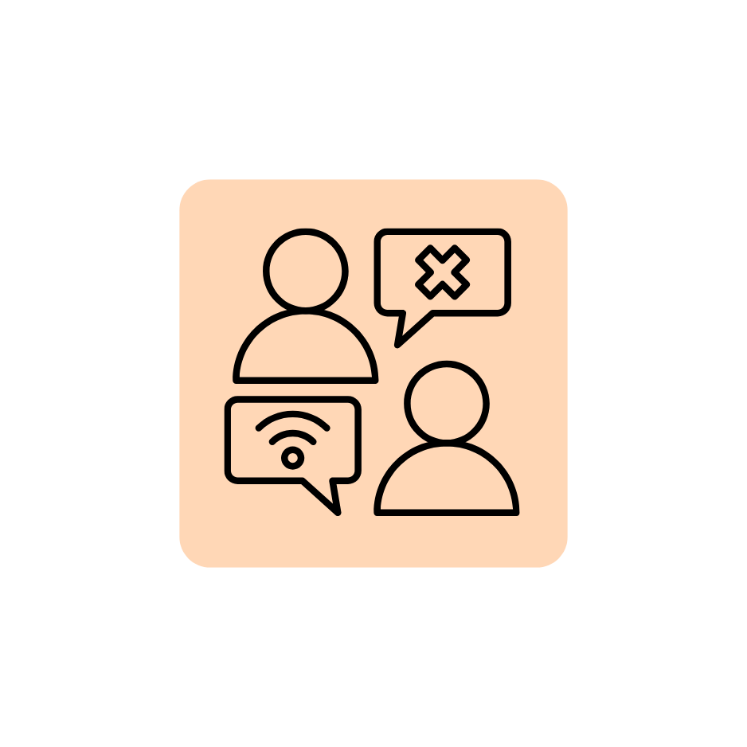
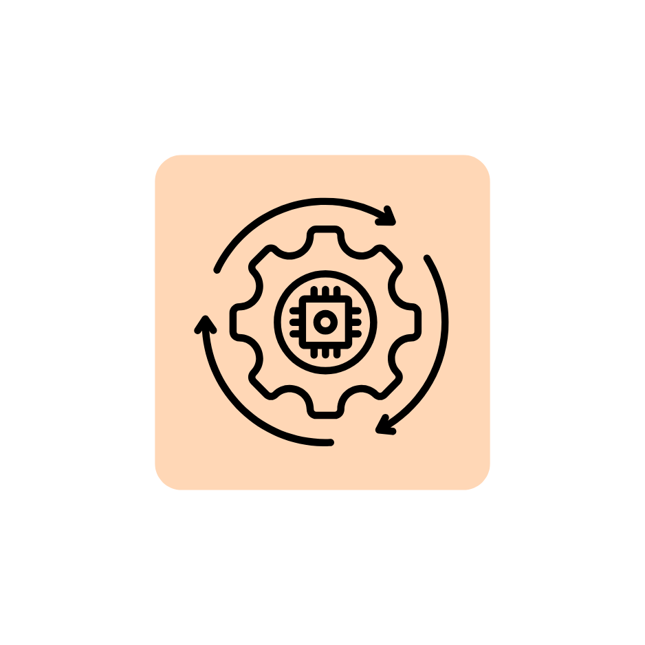
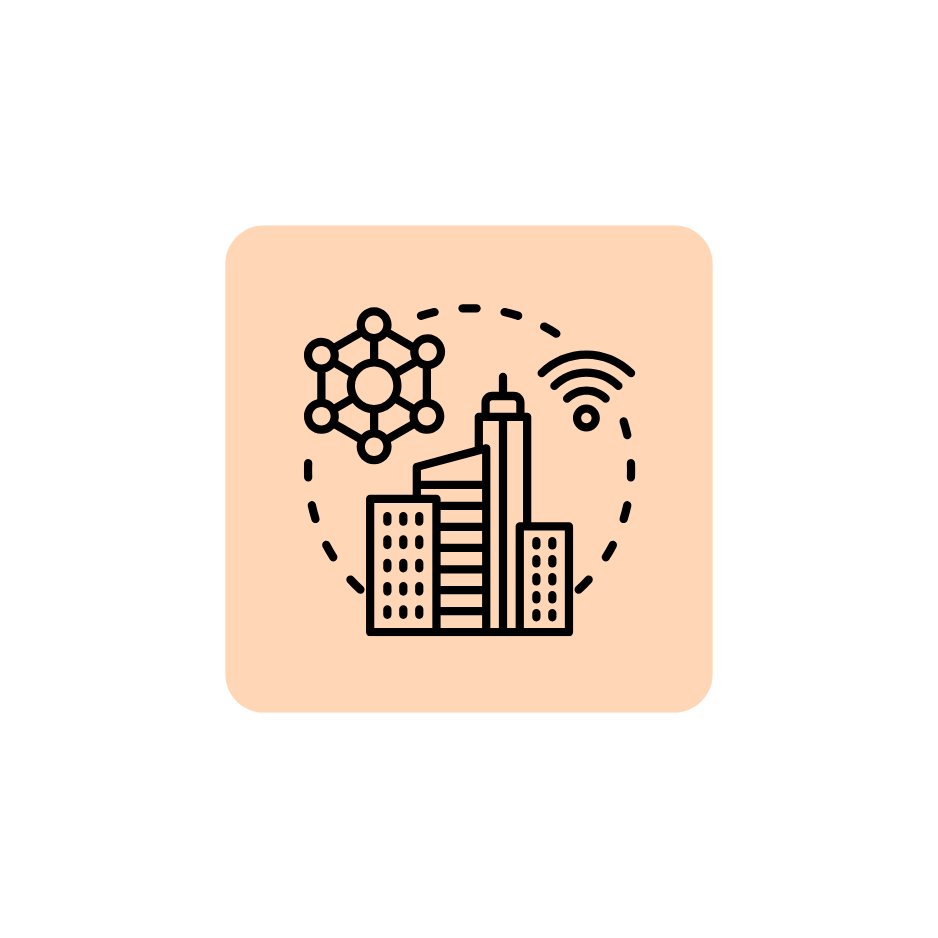

The Ethics of AI
Artificial Intelligence (AI) is advancing at an unprecedented pace, but are we truly prepared for its societal consequences? While AI promises to revolutionize industries, from healthcare to finance, the ethical implications remain deeply troubling. Issues of bias, job displacement, and privacy invasion loom large.
Governments worldwide are scrambling to regulate AI, but reactive policies may be too little, too late.
Ethical AI development should be a collective responsibility involving tech companies, policymakers, and the public.
A more transparent approach is needed—should AI decisions that affect human lives be explainable and accountable?
Analysis: How Technology Reinforces Socio Economic Divides
Technology is often hailed as an equalizer, but history suggests otherwise. Innovations such as the internet and automation have widened the gap between the wealthy and the poor.
 Digital divides persist—those with access to high-speed internet and cutting-edge tools gain economic advantages, while others are left behind.
AI and robotics threaten jobs, particularly in low-skilled sectors, exacerbating income inequality.
Education systems are struggling to keep up with rapid technological changes, making it difficult for the underprivileged to compete.
The Future of Transportation
Technology is revolutionizing transportation at an unprecedented pace and scale. The future of transport is set to be connected, data-driven, shared, on-demand, electric, and highly automated. Innovations are rapidly progressing through stages of conception, research and design, testing, early adoption, and eventually, widespread integration. Projections suggest that the speed of innovation will only continue to gain momentum.
Challenges
However, these disruptive technologies could also exacerbate existing transport and land Safety of the new technology autonomous vehicles will be a continued concern.
Cybersecurity Risks: Cyberattacks could jeopardize public safety and cause extensive disruptions to connected transportation networks.
The production of electric and autonomous vehicles, while helping reduce emissions during use, comes with its own environmental challenges. Extracting rare earth materials for batteries has a significant impact on the planet, highlighting the need for more sustainable manufacturing practices.
Electrification and Sustainability
Electric Vehicles (EVs) are poised to dominate both public and private transportation, with governments and companies investing in charging infrastructure and incentive's EV adoption to reduce carbon emissions.
Autonomous and Connected
Autonomous cars expected to compromise about 25% of the global market by 2040, AI-powered public transit systems and self-driving automobiles are anticipated to become widespread. These systems could optimize routes, lessen accidents, and enhance traffic flow. In order to create a smooth transportation network, vehicles may even be able to speak with one another.
Smart Cities Integration
Transportation will likely integrate with smart cities, utilizing IoT (Internet of Things) to coordinate traffic signals, parking systems, and public transport. This interconnection will promote efficiency and convenience.